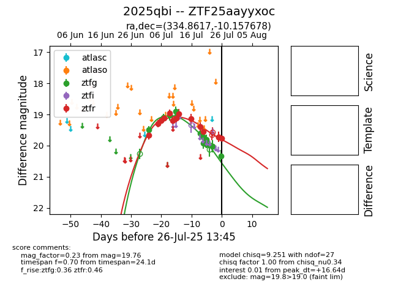

Target 2025qbi at 2025-07-26 13:45, see:
FINK: fink-portal.org/2025qbi
Lasair: lasair-ztf.lsst.ac.uk/objects/2025qbi
ALeRCE: alerce.online/object/2025qbi
TNS: wis-tns.org/object/2025qbi
YSE: ziggy.ucolick.org/yse/transient_detail/2025qbi
alt names
ZTF25aayyxoc (ztf,fink)
2025qbi (tns,yse)
coordinates:
equatorial (ra, dec) = (334.8617,-10.15768)
galactic (l, b) = (50.9189,-50.42265)
photometry
last ztfg=20.34, ztfr=19.76
12 ztfg, 14 ztfr detections
